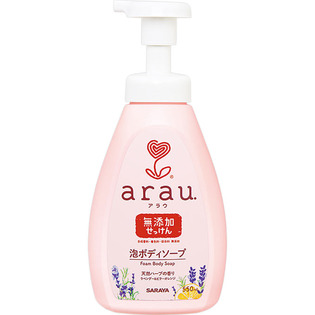

返回列表
产品名称：アラウ 泡ボディソープ

サラヤ アラウ 泡ボディソープ ５５０ｍｌ
メーカー サラヤ
JANコード 4973512258350
商品の特徴
●手洗いでもタオル使用でも泡がなくなることなく、「泡持ちよく」洗えます。
●ほのかな優しいラベンダーの香りです。（天然ハーブ１００％）
成分・分量
【成分】
水、カリ石ケン素地、グリセリン、クエン酸、ラベンダー油、ビターオレンジ油、ローズマリー油、オレンジ油、シソ葉エキス、ローズマリーエキス、ＢＧ
用法及び用量
【使用方法】
適量を手の平やスポンジ、タオルなどにとり、やさしく洗った後、十分にすすいでください。